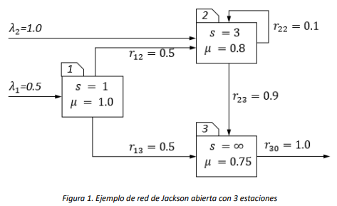
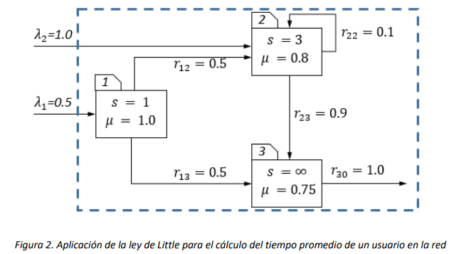
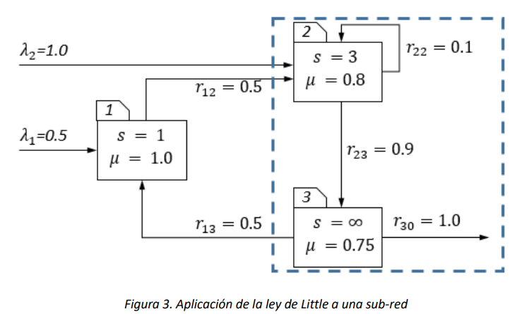
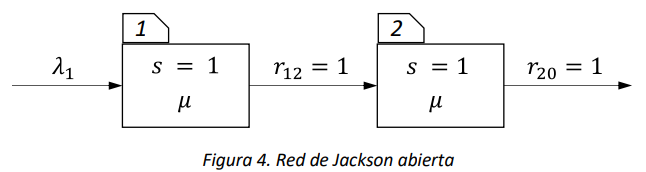
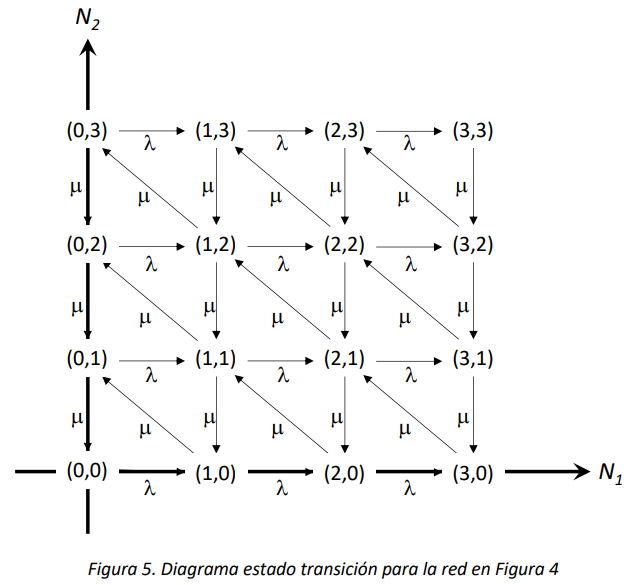

14. Redes de Jackson#
En este capítulo se introduce una clase de redes de colas conocida como redes de Jackson, por el nombre del matemático estadunidense James Jackson, quien las introdujo en un famoso artículo científico en 1963. Primero se proporciona la definición de las redes de Jackson, y después se presenta el teorema de Jackson, que permite analizar de forma muy sencilla la distribución de probabilidad de estado estacionario de las redes de Jackson estables. Finalmente, se realiza una discusión sobre la relevancia del resultado de Jackson.
14.1. Introducción#
Una red de colas general está formada por un conjunto de colas (o estaciones), que pueden ser entre ellas diferentes por número de servidores, distribución de servicio, disciplina, etc. Los usuarios de la red pueden requerir de múltiples y repetidos servicios a las estaciones, y se mueven en la red de acuerdo con un ruteo que puede ser dependiente del estado de las estaciones, del tiempo (en este caso la red será no homogénea), de características particulares del usuario (es este caso la red se dirá multi-clase, siendo una clase un conjunto de usuarios homogéneo), etc. También, una red puede ser abierta (cuando los usuarios llegan a las colas desde un ambiente externo) o cerrada (cuando los usuarios circulan indefinidamente en ella sin dejarla). Cuando existan clases múltiples de usuarios, es posible encontrar redes híbridas, con clases de usuarios que entran a la red y clases de usuarios que nunca la dejan.
Las redes de Jackson conforman una particular familia de redes de colas. Para que una red de colas sea una red de Jackson abierta (De aquí en adelante solo se considerará esta familia), las siguientes condiciones deben ser satisfechas:
Hay \(m > 0\) estaciones y todas las estaciones tienen tiempos de servicio que se distribuyen exponencial con tasa constante[1] y su capacidad es infinita.
Las llegadas externas a la estación \(i\) siguen un proceso de Poisson de parámetro \(\lambda_{i}\), \(i = 1,2,\ldots,m\). Nótese que puede ser \(\lambda_{i} = 0\) para alguna estación, pero debe también ser \(\sum_{j = 1}^{m}{\lambda_{j} > 0}\), de lo contrario no sería una red abierta.
Un usuario que complete el servicio a la estación \(i\) se mueve a la estación \(j\) con probabilidad \(r_{ij}\), y deja la red con probabilidad \(r_{i0} = 1 - \sum_{j = 1}^{m}{r_{ij} \geq 0}\). Nótese que \(r_{i0}\) tiene que ser positivo para alguna estación, de lo contrario no habría salida de la red. Es posible que \(r_{ii} > 0\), es decir que en algunas estaciones los usuarios puedan recibir servicios repetidos.
Por ejemplo, el diagrama en la Figura 1 representa una red de Jackson abierta con 3 estaciones, donde las tasas de llegada y de servicio se suponen expresadas en términos de las mismas unidades de tiempo.

En la red de Jackson de la Figura 1, cada estación es representada gráficamente con un rectángulo. En el interior de cada rectángulo se describen las características de la estación que se modela. Por ejemplo, la estación numerada 1 tiene un número de servidores \(s = 1\), y la tasa del servicio es \(\mu = 1.0\), la estación 2 tiene 3 servidores con tasa de servicio \(\mu = 0.8\) y finalmente la estación 3 tiene infinitos servidores, cada uno con tasa de servicio \(\mu = 0.75.\) En la red hay llegadas externas a las estaciones 1 y 2, los usuarios que terminan servicio a la estación 1 llegan a las estaciones 2 y 3 con igual probabilidad, los que salen de la estación 2 pueden volver a esa misma estación con una probabilidad de 0.1 o dirigirse a la estación 3. Finalmente, todos los usuarios salen de la red después de recibir servicio a la estación 3.
14.2. Estabilidad en redes de Jackson abiertas#
En esta sección consideramos el problema de determinar si una red de Jackson abierta puede tener un estado estacionario. Para ello, necesitamos determinar la tasa de llegada total a cada estación de la red. Usamos la expresión tasa total porque en general, por cada estación \(i\), \(i = 1,2,\ldots,m\), pueden existir 2 tipos distintos de llegadas:
Las llegadas externas, que ocurren de acuerdo con un proceso de Poisson de parámetro \(\lambda_{i}\).
Las llegadas de otra estación \(j\), \(j = 1,2,\ldots,m\), de acuerdo con la probabilidad de ruteo \(r_{ji}\).
Para que una red de Jackson abierta sea estable, es necesario que la tasa total de llegada a cada estación sea estrictamente menor que la tasa de servicio de la estación. Eso asegura que ninguna estación se congestione y que el número promedio de usuarios en cada estación sea finito en el estado estacionario.
Denotamos entonces con \(\Lambda_{i}\) la tasa total de llegada a la estación \(i\), \(i = 1,2,\ldots,m\). La tasa total, como está descrito anteriormente, será el resultado de la siguiente suma:
En la ecuación (1), la tasa total de llegada a una estación \((\Lambda_{i}\)) está descrita en función de las tasas de llegada a las estaciones (los \(\Lambda_{j}\)). Esta definición se basa en el supuesto de que, en el equilibrio, la tasa de salida de cada estación es necesariamente igual a la tasa total de llegada a la misma, por lo cual el flujo de usuarios que de la estación j se dirigen a la estación i será igual a \(\Lambda_{j} \cdot r_{ji}\). Las \(m\) ecuaciones lineales (una por cada estación) conforman un sistema lineal, cuya solución simultánea proporciona las tasas totales de llegada \(\Lambda_{i}\), \(i = 1,2,\ldots,m\).
Ejemplo 1
Calculamos las tasas totales de llegada para la red de Jackson abierta de la Figura 1. La ecuación para la estación 1 será sencillamente:
Dado que no hay llegadas de las demás estaciones. Para la estación 2 tendremos que:
Suma de las llegadas externas a la estación (\(\lambda_{2}\)), de las llegadas de los usuarios que terminan servicio a la estación 1 e ingresan a la estación 2 (\(\Lambda_{1}r_{12}\)), y de las llegadas de los usuarios que termina servicio a la estación 2 y vuelven a ingresar a esa misma estación (\(\Lambda_{2}r_{22}\)). Finalmente, para la estación 3, la ecuación (1) nos proporciona la siguiente expresión para \(\Lambda_{3}\):
Entonces será \(\Lambda_{1} = \lambda_{1} = 0.5\), y
Finalmente:
Para que una red de Jackson abierta sea estable, deberá ser que, por cada estación \(i\), \(i = 1,2,\ldots,m\), la siguiente condición sea satisfecha:
Donde \(s_{i}\) y \(\mu_{i}\) denotan el número de servidores de la estación \(i\) y la tasa de servicio de cada servidor de esta, respectivamente. Cuando el número de servidores de la estación \(i\) sea \(s_{i} = \infty\), la condición de estabilidad (2) se considera siempre satisfecha, sin importar la tasa de servicio, ya que este tipo de estación no podrá nunca ser congestionada.
Ejemplo 2
Verificamos la estabilidad de la red de Jackson en la Figura 1 en la siguiente tabla:
Estación 1 |
Estación 2 |
Estación 3 |
|---|---|---|
\(\frac{\mathbf{\Lambda}_{\mathbf{1}}}{\mathbf{s}_{\mathbf{1}}\mathbf{\bullet}\mathbf{\mu}_{\mathbf{1}}}\mathbf{=}\frac{\mathbf{0.5}}{\mathbf{1 \bullet 1.0}}\mathbf{= 0.5 < 1}\) |
\(\frac{\Lambda_{2}}{s_{2} \bullet \mu_{2}} = \frac{1.388}{3 \bullet 0.8} = 0.578 < 1\) |
$\(\frac{\Lambda_{3}}{s_{3} \bullet \mu_{3}} < 1\)$ |
Estable |
Estable |
Estable porque \(s_{3} = \infty\) |
Dado que todas las estaciones son estables, podemos concluir que la red de Jackson abierta en la Figura 1 tiene un estado estacionario.
Las ecuaciones en la expresión (1) se llaman por obvias razones ecuaciones del tráfico de la red de Jackson. Es posible escribir las ecuaciones en forma matricial, lo cual simplifica la automatización del cálculo a la hora de utilizar una herramienta computacional como R©. Denotamos con \(\overrightarrow{\Lambda} = (\Lambda_{1},\Lambda_{2},\ldots,\Lambda_{m})\) el vector de las tasas totales de llegada (las variables cuyos valores son por determinar), con \(\overrightarrow{\lambda} = (\lambda_{1},\lambda_{2},\ldots,\lambda_{m})\) el vector de las tasas de llegadas externas y con \(R\) la matriz de probabilidades de ruteo, tal que \(\left\| R \right\|_{ij} = r_{ij}\), es posible re-escribir las \(m\) ecuaciones en la expresión (1) de la siguiente forma:
Y de la (3) obtener una fórmula para el \(\overrightarrow{\Lambda}\), como sigue:
14.3. El teorema de Jackson (1963) y sus aplicaciones#
El resultado conocido como Teorema de Jackson proporciona una manera extremadamente sencilla de calcular las probabilidades en estado estacionario para las redes de Jackson abiertas estables. Una versión muy concisa del teorema de Jackson es la siguiente:
Teorema de Jackson (1963). En una red de Jackson abierta estable, con \(m > 0\) estaciones, donde la estación \(i\) tiene \(s_{i}\) servidores, en el estado estacionario la distribución conjunta de la probabilidad de estado tiene forma de producto y la distribución de estado estacionaria marginal de la estación \(i\) es aquella de una \(M/M/s_{i}\).
Para entender el sentido del teorema de Jackson, empezamos con denotar con \(N_{i}\) la variable aleatoria número de usuarios en el estado estacionario en la estación \(i\), \(i = 1,2,\ldots,m\). La distribución conjunta estacionaria de la probabilidad de estado es la probabilidad de que, en el estado estacionario de la red, \(N_{1} = n_{1}\) o sea de que \(n_{1}\) usuarios se encuentren en la estación 1, \(N_{2} = n_{2}\), y así hasta la estación \(m\). Podemos denotar dicha probabilidad estacionaria con la siguiente notación:
El teorema de Jackson afirma que
Este resultado tiene forma de producto porque la probabilidad conjunta se descompone en el producto de las probabilidades de estado marginales de las estaciones.
Es interesante observar que el resultado de Jackson nos permite tratar las diferentes estaciones como si fueran entre sí independientes, mientras que no lo son por la obvia razón de que están relacionadas de acuerdo con la topología de la red. Además, las distribuciones marginales de las estaciones, es decir los factores \(P\lbrack N_{i} = n_{i}\rbrack\), son iguales a las probabilidades de una cola \(M/M/s_{i}\), y por ellas tenemos ya las fórmulas onesin necesidad alguna de solucionar ecuaciones de balance.
Ejemplo 3
Aplicamos el teorema de Jackson a la red de Jackson abierta de la Figura 1. Por ejemplo, consideramos la probabilidad de que en el estado estacionario todas las estaciones se encuentren vacías, o sea de que el número total de usuarios en la red sea cero. Lo que queremos evaluar es entonces:
Por el teorema de Jackson, en el estado estacionario esta probabilidad conjunta es igual a
El primer factor en la expresión arriba es la probabilidad de que una cola \(M/M/1\) estable se encuentre vacía. Por las fórmulas de la \(M/M/1\), será que \(P\left\lbrack N_{1} = 0 \right\rbrack = \pi_{0} = 1 - \rho = 1 - \frac{\Lambda_{1}}{\mu_{1}} = 0.5\).
Aquí, nótese que es necesario utilizar las tasas totales de llegada al aplicar las fórmulas para calcular los índices de cada estación. Así, para la estación 2 que es una cola \(M/M/3\), será necesario utilizar la siguiente fórmula para \(P\left\lbrack N_{2} = 0 \right\rbrack\)=\(\pi_{0}\)
Siendo \(\rho_{2} = \frac{\Lambda_{2}}{s_{2} \bullet \mu_{2}} = 0.5783\). Sustituyendo los valores numéricos se obtiene para la segunda estación
Para la tercera estación, de las fórmulas de la cola \(M/M/\infty\) se obtiene:
Entonces, la probabilidad de que no haya ningún usuario en la red será dada por
El resultado de Jackson implica una forma de independencia que facilita el cálculo no solo de las probabilidades de estado estacionarias, sino de todas las medidas de desempeño. Por ejemplo, supongamos que nos interese calcular \(L^{i}\), el número promedio de usuarios en estado estacionario en la estación \(i\) de la red de Jackson. La fórmula por utilizar es la fórmula del promedio, como sigue:
Ahora, utilizando el teorema de Jackson y repartiendo los factores del producto se obtiene lo siguiente:
Ahora bien, la última suma es la suma de toda la distribución de estado estacionaria para la última estación, lo cual es 1, igual que la suma de todas las demás sumatorias después de aquella para la estación \(i\), así que se obtiene:
Y de la misma manera, las sumas para las estaciones antes de aquella para la estación \(i\) son unitarias, así que se obtiene:
Lo anterior significa que para calcular los promedios del número de usuarios (tanto \(L\) como \(L_{q}\)y \(L_{s}\)) solo tenemos que utilizar la distribución de estado marginal. Y como consecuencia, podemos calcular los tiempos promedio \(W\) como \(W_{q}\)y \(W_{s\ }\)de cada estación, utilizando la ley de Little. Todos estos cálculos se hacen como si las estaciones fuesen colas independientes. A tener siempre en cuenta, las tasas de llegada que se utilizan para calcular los índices de rendimiento son aquellas totales \((\Lambda_{i})\), que se obtienen de la solución de las ecuaciones de tráfico de la red.
Finalmente, es importante observar que el número total promedio de usuarios en la red se obtiene de la suma de los promedios a cada estación, así que será:
Donde \(L\) es el promedio de usuarios en la red en estado estacionario. De la misma manera, se obtienen los promedios de usuarios en cola y en servicio en la red.
Para el cálculo del tiempo promedio que cada usuario pasa en la red (o en general en un subconjunto de las estaciones), es necesario utilizar la ley de Little. Nótese que los tiempos promedios \(W\), \(W_{q}\)y \(W_{s\ }\)de cada estación son los tiempos promedios por cada visita de un usuario, por lo cual la suma de estos tiempos no es en general igual al tiempo promedio total, ya que los usuarios pueden visitar las estaciones con diferente probabilidad, e incluso puede visitar múltiples veces las mismas, dependiendo de las probabilidades del ruteo.
Nota
La suma de los tiempos promedios que un usuario pasa en las diferentes estaciones no es igual al tiempo promedio del usuario en la red. La forma correcta de calcular el tiempo promedio total es con la ley de Little. El único caso en donde se cumple que la suma de los tiempos promedios que un usuario pasa en las diferentes estaciones es igual al tiempo promedio del usuario en la red es cuando la red es 100% secuencial. Lo anterior significa que no existen reprocesos o, lo que es lo mismo, luego de que una entidad termina su proceso en una estación, pasará a una única siguiente estación diferente de sí misma el 100% de las veces hasta que dicha entidad salga de la red.
Ejemplo 4
El número promedio total de usuarios en la red de Jackson de la Figura 1 está dado por la suma de los promedios en las tres estaciones, que se calculan, así como sigue:
Estación |
Cola correspondiente |
Número promedio de usuarios (L) |
|---|---|---|
1 |
\(M/M/1\) |
\(L^{1} = \frac{\rho}{1 - \rho} = \frac{0.5}{1 - 0.5} = 1\) |
2 |
\(M/M/3\) |
\(L^{2} = L_{s} + L_{q} = \frac{\Lambda_{2}}{\mu_{2}} + \frac{P\lbrack i > 3\rbrack\rho_{3}}{1 - \rho_{3}} = 1.735 + 0.342 = 2.0778\) |
3 |
\(M/M/\infty\) |
\(L^{3} = L_{s} = \frac{\Lambda_{3}}{\mu_{3}} = \frac{1.5}{0.75} = 2\ \) |
Entonces el promedio total de los usuarios en la red de Jackson, en estado estacionario, es:
El tiempo promedio total de un usuario en la red se calcula con la ley de Little:
El \(L\) a utilizar es el total promedio de todas las estaciones, y el \(\lambda\) a utilizar es la tasa total de llegada al sistema conformado por las estaciones consideradas. Si consideramos todas las estaciones, entonces la tasa total de llegada tiene que incluir la tasa externa de llegada a la estación 1 y la tasa externa de llegada a la estación 2. Como se explica en la Figura 2, el sistema al cual se aplica en este caso la ley de Little es aquel que se encuentra dentro del rectángulo con bordes en línea discontinua, y hay dos flujos de llegada que cruzan esos bordes.

Entonces se determina el \(W\) para la red como sigue: $\(W = \frac{L} {\lambda} = \frac{L^{1} + L^{2} + L^{3}}{\lambda_{1} + \lambda_{2}}\)$
Finalmente, si por ejemplo se necesitase calcular el tiempo promedio que cada usuario pasa en la sub-red conformada por las estaciones 2 y 3, entonces el sistema al cual aplicar la ley de Little sería aquel encerrado en el rectángulo que se ilustra en la Figura 3. El número promedio de usuarios a utilizar sería \(\ L = L^{2} + L^{3}\) y la tasa \(\lambda = \Lambda_{2}\), ya que el flujo total de usuarios que ingresa al sistema es el flujo total de ingreso a la estación 2.

14.4. Relevancia del teorema de Jackson#
En esta sección se pretende explicar con un pequeño ejemplo el alcance del resultado de Jackson y su utilidad, haciendo énfasis sobre las simplificaciones que permite en el análisis de redes de colas.
Consideramos una de las redes de Jackson más sencillas, la red tándem conformada por dos estaciones idénticas, cada una son un solo servidor, conectadas en serie, así como se ilustra en la Figura 4.

Gracias al teorema de Jackson, sabemos qué si la red es estable, lo cual ocurre en este caso particular si \(\lambda < \mu\), es posible analizar el modelo como si fuese conformado por 2 colas \(M/M/1\) idénticas e independientes. Supongamos ahora que no se conozca el teorema de Jackson, y exploramos el análisis de la red sin ello.
Dado que todos los tiempos se distribuyen exponencial en la red, es posible modelar su evolución en el tiempo con una Cadena de Markov en tiempo continuo. Entonces, sea \(\left\{ X(t),t \geq 0 \right\}\) el proceso de Markov en tiempo continuo tal que \(X(t) = (N_{1}(t),N_{2}(t))\) es el vector cuyos elementos son el número de usuarios en cada estación en el tiempo \(t\). El espacio de estados \(S_{X}\) del proceso estocástico es el siguiente:
y entonces es infinito. Es posible visualizar el diagrama de estado y transiciones de manera ordenada, colocando los estados en los puntos enteros del cuadrante cartesiano positivo, como se muestra en la Figura 5.

Para realizar el análisis en estado estacionario, sería necesario primero escribir las ecuaciones del balance en el estado estacionario. Eso sería posible solo en teoría, ya que se trataría de escribir un número infinito de ecuaciones. Las ecuaciones no son de hecho complicadas. Las primeras serían las siguientes:
Para cualquier estado \((i,j)\) tal que \(i > 0\ \) y \(j > 0\), es decir que no esté en la frontera del diagrama en la Figura 5, la ecuación del balance para el estado estacionario es la siguiente:
Si bien es posible escribir las ecuaciones, no es posible escribirlas todas ni mucho menos solucionarlas. Entonces, para hacer que el cálculo sea factible, sería necesario cortar el espacio de estados a una cardinalidad finita. Esto podría realizarse, por ejemplo, manteniendo solo los estados tales que el total de usuarios en la red fuese menor a un número máximo. Si por ejemplo supiéramos que es muy poco probable que haya más de 99 usuarios en cada nodo de la red, podríamos eliminar todos los estados tales que \(i \geq 100,j \geq 100\).
Entonces no quedaría un espacio de estados con \(100 \times 100 = 10,000\) estados, por lo cual sería posible solucionar un sistema lineal de 10,000 ecuaciones y obtener 10,000 probabilidades en estado estable. Ahora, para el cálculo de los índices de rendimiento, por ejemplo, el valor esperado del número de usuarios en el sistema sería necesario realizar el cálculo de la sumatoria que define el valor esperado, ya que sin el resultado de Jackson no se conoce ninguna propiedad que permita simplificarlo.
En resumen, el teorema de Jackson nos permite:
Ahorrar la necesidad de truncar espacios de estados infinitos.
Evitar tener que renunciar a la solución exacta por una aproximada.
No tener que escribir ecuaciones de balance en el estado estacionario.
Eliminar la necesidad de solucionar el sistema lineal de las ecuaciones del balance.
Hacer que el cálculo de los índices de rendimiento sea inmediato.